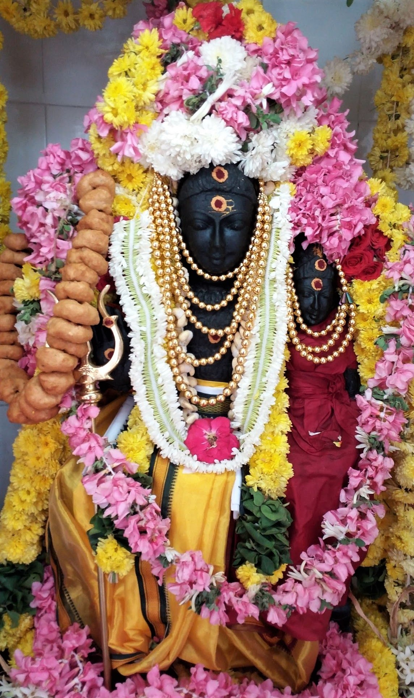

The word Bhairava is made up of “bha" + “ra" + “va". “Bha" means the sustenance of the universe and “ra" means dissolution of the universe and “va" means manifestation of the universe. These are the prime qualities of God (the Brahman) — creation, sustenance and dissolution. In the Bhairava form of Śiva, His ultimate reality is coupled with the eternal awareness of Śakti. The Svarṇākarṣaṇa Bhairava form is different from the forms of Bhairava that we have discussed in “Forms of Bhairava" and “Pervasive Bhairava". This Svarṇākarṣaṇa Bhairava form is considered as the Supreme combination of Śiva and Śakti from where the Universe originates, sustains and dissolves. The upāsanā of Bhairava is considered indispensable for all upāsakas of Bhagavatī. Lord Bhairava is worshiped in various forms: as the consort of Mahāvidyā Goddesses (Akṣōbhya Bhairava, Krodhabhairava, etc.); as the consort of the Mātṛkā group of deities (Asitāṅga Bhairava, Ruru Bhairava, etc.); as the son of Bhagavatī, Vaṭuka, who is indispensable to saparyā, as is the Kumārī; various forms of Bhairavas who form the retinue of Bhagavatī invoked for protection such as Baḍabānala Bhairava, Ākāśabhairava, Unmatta Bhairava, etc; special forms invoked for specific purposes by śākta-s: Svarṇākarṣaṇa Bhairava for protection and prosperity, Sammōhana Bhairava (for enchantment), Svacchanda Bhairava (as Mahāguru in śrīkula krama system), etc.
Śrī Svarṇākarṣaṇa Bhairava is an uttarāṃga mantra to Mahāṣoḍaśī, Mahāprāsāda and also Vanadurgā. His association with Śrī Vidyā and Māhātmya are described in “Sundarī Tantra”.
tripurāyāḥ pure ramye mūle kalpataroḥ śubhe
sthitaḥ simhāsane tatra bhāti kaḥ puruṣaḥ paraḥ
dāsībhūtā mahālakṣmīḥ purato yasya rājate
tasya me devadevasya mahāmantram̐ vada prabho
Parvati questions thus: “Lord! Who is the resplendent Puruśa seated on a throne under the wish-fulfilling kalpavṛkśa in the beautiful city of Śrī Tripurasundarī (Śrīpuram)? Mahālakṣmī, the goddess of wealth, has stationed herself in his service [1]. Please describe the great mantra of this deity.”
mahātripurasundaryāḥ pure bhogasamnvite
mūle kalpatarormahāsane maṇivirājite
svarṇākarṣaṇanāmā’sau bhāti śrībhairavaḥ svayam
bhaktānāṃ tripurāmbāyāḥ dhanarāśipradāyakaḥ
alakṣmīnāśanaḥ sākṣāt brahmaviṣṇuśivātmakaḥ
Śrī Dakṣinamurti replies thus: “In the city of Śrī Mahātripurasundarī filled with riches, seated on a gem-studded golden throne is the great Svarṇākarṣaṇa Bhairava. He grants enormous wealth to the devotees of Śrī Tripurāmbika. He destroys misfortune and his form constitutes of Brahmā-Viṣṇu-Rudra, the trinity.”
brahmā nārāyaṇaḥ śambhurindrādyā lokapālakāḥ
nityamenaṃ pūjayanti sampattyarthaṃ maheśvari
sarvasampatprado nṝṇāṃ mahādāridryanāśakṛt
“The trinity, Indra and other deities worship him to obtain riches. He grants prosperity to men and destroys poverty”.
purā pitāmaho devamenaṃ sampūjya bhairavam
samprāpāṣṭaguṇaiśwaryam jagatkartṛtvamuttamam
purā nārāyaṇaḥ sākṣāt swarṇākarṣaṇabhairavam
śrīśatvamapa sampūjya dhanādhyakṣaṃ mahābalam
aṇimādiguṇaiśvaryaṃ purā prāptaṃ mayā śive
“Even the trinity worshiped him to obtain the powers of creation, destruction and sustenance”.
Mahādeva then goes on to describe the mantra [2] of The Lord and various prayoga-s to obtain unimagined riches [3]. As “Sundarī Tantra” [4] is a Śrīkula—kādi krama ṭantra, Svarṇākarṣaṇa Bhairava, described as an aṇga here, would pertain to kādi ṣoḍaśī. “Sundarī Tantra” teaches aṇga rāhitya for pancadaśī. Svarṇākarṣaṇa Bhairava is described as one of the primary aṇga-s of Śrīvidya in “Dattātreya Samhitā”. He is a part ofthe “Raśmimala”, among the “Chintāmaṇi Traya” [5]. By sampradaya, Svarṇākarṣaṇa Bhairava is one of the sixteen aṇga-s of sādi vidyā saptadaśākṣarī. The upāsanā of Bhairava involves, along with mantra, japa and āvaraṇa pūjā, recitation of mālā, sahasranāma [6], aṣṭottara, kavacha, stavarāja and hṛdaya. The details of these however have to be received directly from one’s Guru.
Notes1:
[1] Mahālakṣmī is described as serving the Lord in various dhyāna śloka-s of this Bhairava. The “Svarṇākarṣaṇa Aṣṭottara” includes several names such as: Mahālakṣmyarcitapadaḥ, Ramāpūjitapādābjaḥ, Vaikuṇṭhaśrīsamāśritaḥ, etc. Mahālakṣmī and Madhumati are the two aṇgavidya-s of Śrī Svarṇākarṣaṇa Bhairava. “Svarṇākarṣaṇa Bhairava Tantra” (which most possibly is a part of the bigger śaiva āgama, “Mahapanchākṣarī Tantra”, also housing other smaller tantras such as “Chidambara Tantra”) describes a story where Mahālakṣmī lost her powers due to a curse by Śrī Durvasa Bhattaraka and worshipped Bhairava at Avimukta kṣetra to regain her powers.
[2] The particular form of mantra described in “Sundarī Tantra” seems to be the version used popularly by śrīvidyā upasaka-s. For some reason, this mantra is published in hundreds of corrupted forms in various manuals and these corruptions can hardly be dismissed as pāṭhāntara-s. There are two other forms of mantra, one from an unknown source quoted in “Āmnāya Kalpalatā” (copied as is in later works such as “Amnaya Mantra Sangraha”, “Saparya Paddhati”, “Lalitarchana Chandrika”, etc.) and the other from “Skanda Yāmala” in the “Vanadurgā Mahāvidyā Prakaraṇa”. Though the mantra described in the context of mahāvidyā is different, most upāsaka-s seem to use the first and the popular version during recitation of panchaṣatī/saptaṣatī. The only sampradāya which seems to use “Skandayāmala” as pramāṇa is that of Kalyanananda Bharati of Andhra Desha. They use a mixture of “Vanadurgopaniṣad” and “Kalpa Kaustubha” (of Rudrayamala) for the mūla pāṭha of mahāvidyā panchaśati but utilize the aṇga-vidyā krama of “Skanda Yamala”. Of course, everything said by Kalyanananda Bharati has to be consumed with a pinch of salt and sometimes pepper too!
[3] The worship of Svarṇākarṣaṇa Bhairava is chiefly for prosperity and sudden financial gains but that is not the sole benefit of this upāsanā. He is also an Apaduddharaṇa mūrti who destroys hindrances and protects the upāsaka. Svarṇākarṣaṇa Bhairava, famed to be stationed in Chidambaram in the service of Śrī Chitasabhapati and Śrī Śivakamasundari, is described as bhairavo viṣṇurūpakaḥ in “Chidambara Tantra”. He is thus identified as non-different from Śrīmannarayana. He is further described as a combination of Samkarṣaṇa and Bhairava svarupa-s of Narayana and Mahādeva respectively. Due to sattva prādhānya, his mantra is considered ok to be given to women (substituting the praṇava with ramā bīja) initiated into Śrīvidya as women are prohibited from obtaining the mantra of Vaṭuka Bhairava (“Hamsamāheshvara”, “Rudrayāmala”, etc.). However, upāsana of Svarṇākarṣaṇa Bhairava mantra has to be undertaken only under the direct guidance of Sadguru as the mantra activates kuhū nāḍi and malfunctioning of this nādī can cause irreparable damage to a person. Kuhū functions towards ejaculation and its abuse can push the consciousness into netherworlds.
[4] “Sundarī Tantra” is described in the list of tantras speltout in “Vārāhī Tantra”. Another list, in yet another tantra, speaks of a “Tripurasundarī Tantra”. Some hold these two tantras to be the same. But Śrī Gopinath Kaviraj-ji writes somewhere that the two are independent tantras. “Sundarī Tantra” is available almost completely.
[5] The “Chintāmaṇi Traya” includes: Svarṇākarṣaṇa Bhairava, Ardhanārīśvara Chintāmaṇi and Chintāmaṇi Ganapati.
[6] I have not personally seen the “Sahasranāma of Śrī Svarṇākarṣaṇa Bhairava” anywhere but have heard about the existence of one such sahasranāma in the possession of Ganapati Sacchidananda Swami of Mysore. Also, in the “Uttara Pīṭhikā” of the “Svarṇākarṣaṇa Hṛdaya”, there is a clear indication of the existence of such a sahasranāma. Śrī Svarṇākarṣaṇa Bhairava, Bhāgavan Śrī Śuddha Dakśinamurti, Śrī Dattatreya, Bhāgavan Śrī Nṛsiṃha and Bhāgavan Śrī Ucchiśta Maha Ganapati are said to be the five trimūrtyātmaka mūrti-s worshipped in the ūrdhāmnaya of Kādi Krama Tantra. Even outside the realms of the Śrīvidya Krama Tantra, they are described to be trimūrtyātmaka.
sarvākāracidātmikāṃ sakaruṇāṃ siṃhāsanāṃ bhairavīm
śikṣānugraharakṣaṇaikahṛdayāmāgneyamūrtiṃ śivām
viśvatrāṇaparāyaṇāṃghrikamalāṃ kṣudrāśayakṣobhiṇīm
devīṃ bhairava-vāmapakṣanilayāṃ durgām bhaje caṇḍikām

om̐ asyaśrī svarṇākarṣaṇa bhairava mantrasya
śrī brahmā ṛṣiḥ paṅkti chandaḥ
harihara brahmātmaka svarṇākarṣaṇa bhairavo devatā
hrīm̐ bījaṃ saḥ śaktiḥ om̐ kīlakaṃ
mama dāridryanāśārthe svarṇākarṣaṇa bhairava prasāda siddhyarthaṃ
svarṇa rāśi prāptyarthe svarṇākarṣaṇa bhairava mantra jape viniyogaḥ
The purpose of this sadhana is to invoke Śrī Svarṇākarṣaṇa Bhairava and perform His mantra japa to obtain complete grace in all aspects, specifically for removal of all types of poverty and acquisition of immense wealth, as well as to gain peace of mind and contentment in life. The sage (ṛṣiḥ) is the divine seer Brahmā, the meter (chandas) for the mantra is paṅkti and the deity is the intelligence giver Śrī Harihara Brahmātmaka Svarṇākarṣaṇa Bhairava; the seed (bījaṃ) is hrīm̐, the power or śakti is saḥ. The key (kīlakaṃ) to unlock the mantra is om̐.
brahmā ṛṣaye namaḥ śirasi
Open the right palm and touch the top of the forehead with the ring and thumb fingers joined at the top.
paṅkti chandase namaḥ mukhe
Now touch the lips of the mouth with the ring and thumb fingers joined at the top.
brahmātmaka svarṇākarṣaṇa bhairava devatāyai namaḥ hṛdi
Touch the heart area with the right palm.
hrīm̐ bījāya namaḥ guhye
Touch the genitalia area with the right ring finger and thumb joined together.
saḥ śaktaye namaḥ pādayoḥ
Touch the feet area with the right ring finger and thumb joined together.
om̐ kīlakāya namaḥ nābhau
Touch the navel area with the right ring finger and thumb joined together.
mama dāridryanāśārthe svarṇākarṣaṇa bhairava prasāda svarṇa rāśi prāptyarthe svarṇākarṣaṇa bhairava mantra jape viniyogāya namaḥ sarvāṅge
Run both the palms all over the body.
iti ṛṣyādi nyāsaḥ
aim̐ hrīm̐ śrīm̐ āparduddhāraṇāya aṅguṣṭhābhyāṃ namaḥ
Use both the index fingers and run them on both the thumbs.
hrām̐ hrīm̐ hrūm̐ ajāmilabaddhāya tarjanībhyāṃ namaḥ
Use both the thumbs and run them on both the index fingers.
om̐ lokeśvarāya madhyamābhyāṃ namaḥ
Use both the thumbs on the middle fingers.
om̐ svarṇākarṣaṇa bhairavāya anāmikābhyāṃ namaḥ
Use both the thumbs on the ring fingers.
mama dāridrya vidveṣaṇāya kaniṣṭhikābhyāṃ namaḥ
Use both the thumbs on the little fingers.
mahā bhairavāya namaḥ karatalakarapṛṣṭhābhyāṃ namaḥ
Open both the palms; run the opened palms of the right hand on the front and back sides of the left palm and repeat the same for the other palm.
iti kara nyāsaḥ
aim̐ hrīm̐ śrīm̐ āparduddhāraṇāya hṛdayāya namaḥ
Open index, middle and ring fingers of the right hand and place them on the heart area.
hrām̐ hrīm̐ hrūm̐ ajāmilabaddhāya śirase svāhā
Open middle and ring fingers of the right hand and touch the top of the forehead.
om̐ lokeśvarāya śikhāyai vaṣaṭ
Open the right thumb and touch the back of the head. This is the point where the tuft of hair is kept.
om̐ svarṇākarṣaṇa bhairavāya kavacāya hum̐
Cross both the hands and run the fully opened palms from shoulders to finger tips.
mama dāridrya vidveṣaṇāya netratrayāya vauṣaṭ
Touch the eyes with the right index and ring fingers, with the middle finger touching the ājña cakra.
mahā bhairavāya namaḥ astrāya phaṭ
Open up the left palm and strike it three times with index and middle fingers of the right hand.
bhūr-bhuva-ssuvarom-iti digbandhaḥ
May all the directions be sealed and may no thoughts or disturbances impact our ability to recite the hymn.
iti ṣaḍaṅga nyāsaḥ
pītavarṇaṃ catur-bāhuṃ trinetraṃ pīta-vāsasam
akṣyaṃ svarṇa-māṇikyaṃ taḍitapūrita pātrakam
abhilaṣitaṃ mahā-śūlaṃ cāmaraṃ tomarodvaham
svarṇābharaṇa-sampannaṃ muktāhāropaśobhitam (1)
madonmattaṃ sukhāsīnaṃ bhaktānām ca vara pradam
satataṃ cintaye devaṃ bhairavaṃ sarva-siddhidam
pārijāta drumakāntārasthite maṇimaṇḍape
siṃhāsanagataṃ dhyāyed bhairavaṃ svarṇadāyakam (2)
gāṅgeyapātraṃ ḍamaruṃ triśūlaṃ varaṃ karaiḥ saṃdadhataṃ trinetraṃ
devyāyutaṃ taptasvarṇavarṇa svarṇākṛtiṃ bhairavamāśrayāmi (3)
Salutations to Lord Svarṇākarṣaṇa Bhairava, who is yellowish gold in complexion with four arms, three-eyed and adorned in golden garments. His eyes appear as golden rubies and He is emanating brilliance resembling a lightning like bolt, that engulfs the entire Creation. He readily grants all our cherished wishes and desires. He is holding a trident (to dispel all the triads), bearing a whisk and a lance (to penetrate the cakra-s) and is also adorned with all types of precious and rare gems, gold and beautiful strings of pearls. He is comfortably seated and intoxicated with bliss and is ready to fulfill all our wishes. He is constantly reflecting upon and immersed in the welfare of the Creation and is endowed with unlimited siddhi-s. He is in the midst of a forest full of the fragrant and mystical trees called pārijāta and in a hall of precious gems and crytals of unmatched beauty and glitter. He is to be meditated as seated upon a royal lion faced throne and ready to bestow any wish of His sincere devotees.
He is holding a bowl of water from the river Ganges, a musical drum, a trident and displaying the wish granting varamudra. He is three-eyed and is worshipped by tens of thousands of deva-s and other celestials. He is radiant with a brilliant golden complexion and is the grantor of all types of unimaginable prosperity. Salutations to Bhairava, the most merciful and generous grantor of all types of abundance and prosperity!
lam̐ pṛthivyātmikāyai gandhaṁ samarpayāmi
Hold the lower tip of the bottom phalange of the little fingers of both hands with the upper tip of the thumbs, with the back of the hand facing us.
ham̐ ākāśātmikāyai puṣpaiḥ pūjayāmi
Hold the lower tip of the bottom phalange of the thumbs of both hands with the upper tip/nails of the index fingers, with the back of the hand facing us.
yam̐ vāyvātmikāyai dhūpamāghrāpayāmi
Hold the lower tip of the bottom phalange of the index fingers of both hands with the upper tip of the thumbs, with the back of the hand facing us.
ram̐ agnyātmikāyai dīpaṃ darśayāmi
Hold the lower tip of the bottom phalange of the middle fingers of both hands with the upper tip of the thumbs, with the back of the hand facing us.
vam̐ amṛtātmikāyai amṛtaṃ mahānaivedyaṃ nivedayāmi
Hold the lower tip of the bottom phalange of the ring fingers of both hands with the upper tip of the thumbs, with the back of the hand facing us.
sam̐ sarvātmikāyai sarvopacāra pūjām samarpayāmi
Hold the fingers of each palm in a folded manner with the tips of each fingers of both hands touching each other and the thumbs facing the heart, in a “namaste” position.
Recite the below mantra once, to pray to the japa māla and invoke the blessings for a fruitful japa:
om̐ māṃ māle mahāmāye sarvamantra svarūpiṇi
caturvarga stvayinyasta stasmānye siddhidā bhava
Recite the following guru mantra once, to seek the blessings of all gurus and the Guru:
om̐ hrīm̐ siddhaguro prasīda hrīm̐ om̐
atha śrī svarṇākarṣaṇa bhairava ṣaṭpañcāśatyakṣara mantraḥ
Following is the 56-lettered Śrī Svarṇākarṣaṇa Bhairava mantra, that should be recited at least 108 times (1 mālā):
om̐ aim̐ hrīm̐ śrīm̐ āpaduddhāraṇāya hrām̐ hrīm̐ hrūm̐ ajāmala-baddhāya lokeśvarāya svarṇākarṣaṇa bhairavāya mama dāridrya vidveṣaṇāya mahābhairavāya namaḥ śrīm̐ hrīm̐ aim̐
The bīja mantra om̐ represents Śabda Brahman and is also called the praṇava mantra or the primordial sound, the manifested super- consciousness in the form of sound and all syllables. All other sounds and waves are said to have emanated from this mantra. The vāgbhāva bīja mantra aim̐, represents all knowledge, spiritual and material. The māyā bīja mantra hrīm̐ represents manifestation of everything as the power of Creation, sustenance as the power of Preservation and transformation as the power of Destruction. It is also related to concentration, focus, energy, drive, self-esteem, high power and is the main śakti mantra. The Lakṣmī bīja mantra śrīm̐, represents abundance, wealth, well-being and prosperity, as well as fructification of all efforts.
The word ‘āpaduddhāraṇāya’ signifies — the one who rescues us from all dangers and miserable conditions.
The bīja mantra hrām̐ pulls us away from karmic bonds and infuses spirituality into our mind and intellect. The hrīm̐ bīja mantra represents the power of Destruction and applied to the individual self, it is the destruction of our inner karmic bonds represented by antaḥkaraṇa (mind, ego and the intellect) that bind the consciousness to the physical, astral and causal bodies. The form shifting kinnara bīja mantra hrūm̐ brings complete transformation in our spiritual outlook and leads us towards self-realization. In this context Lord Bhairava is aided by the Divine Mother Bhairavi, who wields the power of Destruction and transformation and is the Destroyer of the Creation.
The word ‘ajāmala-baddhāya’ is a combination of ‘aja’ meaning — leader, ‘amala’ meaning — blemish-less and ‘baddhāya’ meaning — bound. He is a blemish-less leader and Lord and bound to the devotion of His devotees. The word ‘lokeśvarāya’ signifies — the Lord who rules over all the worlds (and the Creation Itself). The word ‘svarṇākarṣaṇa’ represents attraction of all types of abundance including gold, precious gems, money, etc. The word ‘bhairavāya’ represents the Lord Bhairava, who is a terrific form of Lord Śiva and is seen as a Protector. He is worshipped as a generous boon giver by His devotees.
The word ‘mama’ means myself/us. The word ‘dāridrya’ means all types of poverty, miseries and unfortunate conditions. The word ‘vidveṣaṇāya’ signifies — the One who hates dāridrya. The word ‘mahābhairavāya’ represent Lord Śiva Himself as the chief Mahābhairava. The namaḥ bīja mantra is for offering salutations to the deity and indicating our complete surrender and request to the deity to take charge of our destiny.
The bīja mantras śrīm̐, hrīm̐ and aim̐ are for encasing the mantra for added protection and easier fruition. This process of reversing the mantras at the end occurring earlier in the mantra, is called sampuṭīkaraṇa.
“Salutations to the Supreme Lord Svarṇākarṣaṇa Bhairava, the One who never fails to come to the rescue of His devotees, relieve us of all karmas, infuse uninhibited spirituality, material abundance and contentment in us and remove all types of misery from our lives once and for all.”
Recite the Svarṇākarṣaṇa Bhairava gāyatrī mantra 10 times or of main mantra japa:
om̐ svarṇabhairavāya vidmahe
svarṇākarṣaṇāya dhīmahi
tanno bhairavaḥ pracodayāt
“May the golden complexioned Lord Svarṇākarṣaṇa Bhairava, the grantor of all types of uninhibited abundance, kindle our intellect and illumine it!”
aim̐ hrīm̐ śrīm̐ āparduddhāraṇāya hṛdayāya namaḥ
Open index, middle and ring fingers of the right hand and place them on the heart area.
hrām̐ hrīm̐ hrūm̐ ajāmilabaddhāya śirase svāhā
Open middle and ring fingers of the right hand and touch the top of the forehead.
om̐ lokeśvarāya śikhāyai vaṣaṭ
Open the right thumb and touch the back of the head. This is the point where the tuft of hair is kept.
om̐ svarṇākarṣaṇa bhairavāya kavacāya hum̐
Cross both the hands and run the fully opened palms from shoulders to finger tips.
mama dāridrya vidveṣaṇāya netratrayāya vauṣaṭ
Touch the eyes with the right index and ring fingers, with the middle finger touching the ājña cakra.
mahā bhairavāya namaḥ astrāya phaṭ
Open up the left palm and strike it three times with index and middle fingers of the right hand.
bhūr-bhuva-ssuvarom-iti digbandhaḥ
May all the directions be sealed and may no thoughts or disturbances impact our ability to recite the hymn.
iti ṣaḍaṅga nyāsaḥ
pītavarṇaṃ catur-bāhuṃ trinetraṃ pīta-vāsasam
akṣyaṃ svarṇa-māṇikyaṃ taḍitapūrita pātrakam
abhilaṣitaṃ mahā-śūlaṃ cāmaraṃ tomarodvaham
svarṇābharaṇa-sampannaṃ muktāhāropaśobhitam (1)
madonmattaṃ sukhāsīnaṃ bhaktānām ca vara pradam
satataṃ cintaye devaṃ bhairavaṃ sarva-siddhidam
pārijāta drumakāntārasthite maṇimaṇḍape
siṃhāsanagataṃ dhyāyed bhairavaṃ svarṇadāyakam (2)
gāṅgeyapātraṃ ḍamaruṃ triśūlaṃ varaṃ karaiḥ saṃdadhataṃ trinetraṃ
devyāyutaṃ taptasvarṇavarṇa svarṇākṛtiṃ bhairavamāśrayāmi (3)
lam̐ pṛthivyātmikāyai gandhaṃ samarpayāmi
Hold the lower tip of the bottom phalange of the little fingers of both hands with the upper tip of the thumbs, with the back of the hand facing us.
ham̐ ākāśātmikāyai puṣpaiḥ pūjayāmi
Hold the lower tip of the bottom phalange of the thumbs of both hands with the upper tip/nails of the index fingers, with the back of the hand facing us.
yam̐ vāyvātmikāyai dhūpamāghrāpayāmi
Hold the lower tip of the bottom phalange of the index fingers of both hands with the upper tip of the thumbs, with the back of the hand facing us.
ram̐ agnyātmikāyai dīpaṃ darśayāmi
Hold the lower tip of the bottom phalange of the middle fingers of both hands with the upper tip of the thumbs, with the back of the hand facing us.
vam̐ amṛtātmikāyai amṛtaṃ mahānaivedyaṃ nivedayāmi
Hold the lower tip of the bottom phalange of the ring fingers of both hands with the upper tip of the thumbs, with the back of the hand facing us.
sam̐ sarvātmikāyai sarvopacāra pūjām samarpayāmi
Hold the fingers of each palm in a folded manner with the tips of each fingers of both hands touching each other and the thumbs facing the heart, in a “namaste” position.
Take water in uttaraṇi (spoon) and by reciting the following śloka, offer the water to the earth:
guhyātiguhyagoptrā tvaṁ gṛhāṇāsmat-kṛtaṁ japam
siddhirbhavatu me deva tvatprasādānmayi sthirā
Recite the below śloka and mantra, followed by placing the māla upon the top of the head and then place it back in the māla bag and conceal it. It should not be worn!
om̐ tvaṃ māle sarvadevānāṃ prītidā śubhadā bhava
śubhaṃ kuruṣya me bhadre yaśo vīryam̐ ca dehime
om̐ hrīm̐ siddhyai namaḥ
Japa: 100,000, homa: 10,000, tarpaṇa: 1,000, mārjana 100, bhojana 10.
om̐ asyaśrī svarṇākarṣaṇa bhairava mantrasya
śrī brahmā ṛṣiḥ anuṣṭup chandaḥ
śrī svarṇākarṣaṇa bhairava devatā
hrīm̐ bījaṃ klīm̐ śaktiḥ saḥ kīlakaṃ
mama sarva-kāma-siddhayarthe
svarṇākarṣaṇa bhairava mantra jape viniyogaḥ
This mantra japa is to invoke Śrī Svarṇākarṣaṇa Bhairava and perform His mantra japa to obtain His complete grace in all aspects, specifically for removal of all types of poverty and acquisition of immense wealth, as well as to gain peace of mind and contentment in life. With His blessings, one gains complete happiness, abundance in wealth, etc. The sage (ṛṣiḥ) is the divine seer Brahmā, the meter (chandas) for the mantra is anuṣṭup and the deity is the ultimate and unlimited wealth and prosperity giver Śrī Svarṇākarṣaṇa Bhairava, the seed (bījaṃ) is hrīm̐, the power or śakti is klīm̐. The key (kīlakaṃ) to unlock the mantra is saḥ.
brahmā ṛṣaye namaḥ śirasi
Open the right palm and touch the top of the forehead with the ring and thumb fingers joined at the top.
anuṣṭup chandase namaḥ mukhe
Now touch the lips of the mouth with the ring and thumb fingers joined at the top.
śrī svarṇākarṣaṇa bhairava devatāyai namaḥ hṛdi
Touch the heart with the right palm.
hrīm̐ bījāya namaḥ guhye
Touch the genitalia with the right ring finger and thumb joined together.
klīm̐ śaktaye namaḥ pādayoḥ
Touch the feet with the right ring finger and thumb joined together.
saḥ kīlakāya namaḥ nābhau
Touch the navel area with the right ring finger and thumb joined together.
mama sarva-kāma-siddhayarthe svarṇākarṣaṇa bhairava mantra jape viniyogāya namaḥ sarvāṅge
Run both the palms all over the body.
iti ṛṣyādi nyāsaḥ
hrām̐ aṅguṣṭhābhyāṃ namaḥ
Use both the index fingers and run them on both the thumbs.
hrīm̐ tarjanībhyāṃ namaḥ
Use both the thumbs and run them on both the index fingers.
hrūm̐ madhyamābhyāṃ namaḥ
Use both the thumbs on the middle fingers.
hraim̐ anāmikābhyāṃ namaḥ
Use both the thumbs on the ring fingers.
hraum̐ kaniṣṭhikābhyāṃ namaḥ
Use both the thumbs on the little fingers.
hraḥ karatalakarapṛṣṭhābhyāṃ namaḥ
Open both the palms; run the opened palms of the right hand on the front and back sides of the left palm and repeat the same for the other palm.
iti kara nyāsaḥ
hrām̐ hṛdayāya namaḥ
Open index, middle and ring fingers of the right hand and place them on the heart.
hrīm̐ śirase svāhā
Open middle and ring fingers of the right hand and touch the top of the forehead.
hrūm̐ śikhāyai vaṣaṭ
Open the right thumb and touch the back of the head. This is the point where the tuft of hair is kept.
hraim̐ kavacāya hum̐
Cross both the hands and run the fully opened palms from shoulders to finger tips.
hraum̐ netratrayāya vauṣaṭ
Touch the eyes with the right index and ring fingers, with the middle finger touching the ājña cakra.
hraḥ astrāya phaṭ
Open up the left palm and strike it three times with index and middle fingers of the right hand.
bhūr-bhuva-ssuvarom-iti digbandhaḥ
May all the directions be sealed and may no thoughts or disturbances impact our ability to recite the hymn.
iti ṣaḍaṅga nyāsaḥ
pītavarṇaṃ catur-bāhuṃ trinetraṃ pīta-vāsasam
akṣyaṃ svarṇa-māṇikyaṃ taḍitapūrita pātrakam
abhilaṣitaṃ mahā-śūlaṃ cāmaraṃ tomarodvaham
svarṇābharaṇa-sampannaṃ muktāhāropaśobhitam (1)
madonmattaṃ sukhāsīnaṃ bhaktānām ca vara pradam
satataṃ cintaye ddevaṃ bhairavaṃ sarva-siddhidam
pārijāta drumakāntārasthite maṇimaṇḍape
siṃhāsanagataṃ dhyāyed bhairavaṃ svarṇadāyakam (2)
gāṅgeyapātraṃ ḍamaruṃ triśūlaṃ varaṃ karaiḥ saṃdadhataṃ trinetraṃ
devyāyutaṃ taptasvarṇavarṇa svarṇākṛtiṃ bhairavamāśrayāmi (3)
Salutations to Lord Svarṇākarṣaṇa Bhairava, who is yellowish gold in complexion with four arms, three-eyed and adorned in golden garments. His eyes appear as golden rubies and He is emanating brilliance resembling a lightning like bolt, that engulfs the entire Creation. He readily grants all our cherished wishes and desires. He is holding a trident, bearing a whisk and a lance and is also adorned with all types of precious and rare gems, gold and beautiful strings of pearls. He is comfortably seated and intoxicated with bliss and is ready to fulfill all our wishes. He is constantly reflecting upon and immersed in the welfare of the Creation and is endowed with unlimited siddhi-s. He is in the midst of a forest full of the fragrant and mystical trees called pārijāta and in a hall of precious gems and crystals of unmatched beauty and glitter. He is to be meditated as seated upon a royal lion faced throne and ready to bestow any wish of His sincere devotees.
He is holding a golden bowl full of abundance, a musical drum, a trident and displaying the wish granting vara mudra. He is three-eyed and is worshipped by tens of thousands of deva-s and other celestials and is Himself radiating with the glow equivalent to tens of thousands of celestials. He is radiant with a brilliant golden complexion and is the grantor of all types of unimaginable prosperity. Salutations to Bhairava, the most merciful and generous grantor of all types of abundance and prosperity!
lam̐ pṛthivyātmikāyai gandhaṁ samarpayāmi
Hold the lower tip of the bottom phalange of the little fingers of both hands with the upper tip of the thumbs, with the back of the hand facing us.
ham̐ ākāśātmikāyai puṣpaiḥ pūjayāmi
Hold the lower tip of the bottom phalange of the thumbs of both hands with the upper tip/nails of the index fingers, with the back of the hand facing us.
yam̐ vāyvātmikāyai dhūpamāghrāpayāmi
Hold the lower tip of the bottom phalange of the index fingers of both hands with the upper tip of the thumbs, with the back of the hand facing us.
ram̐ agnyātmikāyai dīpaṁ darśayāmi
Hold the lower tip of the bottom phalange of the middle fingers of both hands with the upper tip of the thumbs, with the back of the hand facing us.
vam̐ amṛtātmikāyai amṛtaṁ mahānaivedyaṁ nivedayāmi
Hold the lower tip of the bottom phalange of the ring fingers of both hands with the upper tip of the thumbs, with the back of the hand facing us.
sam̐ sarvātmikāyai sarvopacāra pūjām samarpayāmi
Hold the fingers of each palm in a folded manner with the tips of each fingers of both hands touching each other and the thumbs facing the heart in a “namaste” position.
Recite the below mantra once to pray to the japa māla and invoke the blessings for a fruitful japa:
om̐ māṃ māle mahāmāye sarvamantra svarūpiṇi
caturvarga stvayinyasta stasmānye siddhidā bhava
Recite the following guru mantra once, to seek the blessings of all guru-s and the Guru.
om̐ hrīm̐ siddhaguro prasīda hrīm̐ om̐
atha śrī svarṇākarṣaṇa bhairava aṣṭaṭpañcāśatyakṣara mantraḥ
Following is the 58-lettered Śrī Svarṇākarṣaṇa Bhairava mantra, that should be recited at least 108 times (1 mālā).
om̐ aim̐ hrīm̐ śrīm̐ aim̐ śrīm̐ āpaduddhāraṇāya hrām̐ hrīm̐ hrūm̐ ajāmala-baddhāya lokeśvarāya svarṇākarṣaṇa bhairavāya mama dāridrya vidveṣaṇāya mahābhairavāya namaḥ śrīm̐ hrīm̐ aim̐
Recite 10 times or of main mantra japa:
om̐ svarṇabhairavāya vidmahe
svarṇākarṣaṇāya dhīmahi
tanno bhairavaḥ pracodayāt
“May the golden complexioned Lord Svarṇākarṣaṇa Bhairava, the grantor of all types of uninhibited abundance, kindle our intellect and illumine it!”
hrām̐ hṛdayāya namaḥ
Open index, middle and ring fingers of the right hand and place them on the heart.
hrīm̐ śirase svāhā
Open middle and ring fingers of the right hand and touch the top of the forehead.
hrūm̐ śikhāyai vaṣaṭ
Open the right thumb and touch the back of the head. This is the point where the tuft of hair is kept.
hraim̐ kavacāya hum̐
Cross both the hands and run the fully opened palms from shoulders to finger tips.
hraum̐ netratrayāya vauṣaṭ
Touch the eyes with the right index and ring fingers, with the middle finger touching the ājña cakra.
hraḥ astrāya phaṭ
Open up the left palm and strike it three times with index and middle fingers of the right hand.
bhūr-bhuva-ssuvarom-iti digbandhaḥ
May all the directions be sealed and may no thoughts or disturbances impact our ability to recite the hymn.
iti ṣaḍaṅga nyāsaḥ
pītavarṇaṃ catur-bāhuṃ trinetraṃ pīta-vāsasam
akṣyaṃ svarṇa-māṇikyaṃ taḍitapūrita pātrakam
abhilaṣitaṃ mahā-śūlaṃ cāmaraṃ tomarodvaham
svarṇābharaṇa-sampannaṃ muktāhāropaśobhitam (1)
madonmattaṃ sukhāsīnaṃ bhaktānām ca vara pradam
satataṃ cintaye ddevaṃ bhairavaṃ sarva-siddhidam
pārijāta drumakāntārasthite maṇimaṇḍape
siṃhāsanagataṃ dhyāyed bhairavaṃ svarṇadāyakam (2)
gāṅgeyapātraṃ ḍamaruṃ triśūlaṃ varaṃ karaiḥ saṃdadhataṃ trinetraṃ
devyāyutaṃ taptasvarṇavarṇa svarṇākṛtiṃ bhairavamāśrayāmi (3)
lam̐ pṛthivyātmikāyai gandhaṁ samarpayāmi
Hold the lower tip of the bottom phalange of the little fingers of both hands with the upper tip of the thumbs, with the back of the hand facing us.
ham̐ ākāśātmikāyai puṣpaiḥ pūjayāmi
Hold the lower tip of the bottom phalange of the thumbs of both hands with the upper tip/nails of the index fingers, with the back of the hand facing us.
yam̐ vāyvātmikāyai dhūpamāghrāpayāmi
Hold the lower tip of the bottom phalange of the index fingers of both hands with the upper tip of the thumbs, with the back of the hand facing us.
ram̐ agnyātmikāyai dīpaṁ darśayāmi
Hold the lower tip of the bottom phalange of the middle fingers of both hands with the upper tip of the thumbs, with the back of the hand facing us.
vam̐ amṛtātmikāyai amṛtaṁ mahānaivedyaṁ nivedayāmi
Hold the lower tip of the bottom phalange of the ring fingers of both hands with the upper tip of the thumbs, with the back of the hand facing us.
sam̐ sarvātmikāyai sarvopacāra pūjām samarpayāmi
Hold the fingers of each palm in a folded manner with the tips of each fingers of both hands touching each other and the thumbs facing the heart in a “namaste” position.
Take water in uttaraṇi (spoon) and by reciting the following śloka, offer the water to the earth:
guhyātiguhyagoptrā tvaṁ gṛhāṇāsmat-kṛtaṃ japam
siddhirbhavatu me deva tvatprasādānmayi sthirā
Recite the below śloka and mantra, followed by placing the māla upon the top of the head and then place it back in the māla bag and conceal it. It should not be worn!
om̐ tvaṃ māle sarvadevānāṃ prītidā śubhadā bhava
śubhaṃ kuruṣya me bhadre yaśo vīryaṃ ca dehime
om̐ hrīm̐ siddhyai namaḥ
Japa: 100,000, homa: 10,000, tarpaṇa: 1,000, mārjana 100, bhojana 10.
śrī mārkaṇḍeya uvāca
bhagavan pramathādhīśa śiva-tulya-parākrama
pūrvam-ukta-stvayā mantram̐ bhairavasya mahātmanaḥ (1)
The divine seer Śrī Mārkaṇḍeya spoke thus: Salutations to the great lord Bhairava, who is one and the same as Lord Śiva (Rudra), the Destroyer (of ignorance), equal in all respects in His valor, courage, strength and power. May we recite His mantras and meditate upon Lord Bhairava, who is none other than the True Reality! May He confer all material and spiritual benefits upon us and liberate us.
idānīṃ śrotum-icchāmi tasya stotram-anuttamaṃ
tat kenoktaṃ purā stotram̐ paṭhanāt-tasya kiṃ phalam (2)
What is that stotra that is claimed to be all powerful, fruitful for fulfilling all wishes? What is it that is all accomplishing for those, who recite it with full devotion and fervor to Lord Bhairava?
tat sarvaṃ śrotum-icchāmi, brūhi me nandikeśvara (3)
Oh faithful and kind Lord Nandikeśvara2, please narrate this stotram in full and enlighten me.
śrī nandikeśvara uvāca
idaṃ brahman mahā-bhāga lokānām-upakāraka
stotraṃ vaṭuka-nāthasya durlabhaṃ bhuvana-traye (4)
Lord Śrī Nandikeśvara spoke thus: This stotram is of Brahman Himself, manifested as Lord Vaṭuka-nātha3, extremely rare and difficult to find in all the three realms and dimensions. It ushers in immense auspiciousness, opens up the doors to acquisition of immense fortune and also confers immeasurable benefits to the entire world and its populace.
Lord Vaṭuka Bhairava as Brahman manifests Himself as Viriñci Vaṭuka Bhairava, who becomes the cause and mentor of the Creator — Lord Brahma, Mukunda Vaṭuka Bhairava, who becomes the cause and mentor of the Preserver — Lord Viṣṇu and lastly, Rudra Vaṭuka Bhairava, who becomes the cause and mentor of the Destroyer — Lord Rudra. In another classification, Lord Vaṭuka Bhairava is equated with Brahma, Lord Svarṇākarṣaṇa Bhairava with Lord Viṣṇu and Lord Kāla Bhairava with Lord Rudra.
sarva-pāpa-praśamanaṃ sarva-sampatti-dāyakam
dāridrya-śamanaṃ puṃsām-āpadā-bhaya-hārakam (5)
This stotram removes all sins and bad karmas, bestows all types of wealth and prosperity. Destroys all types of poverty, ignorance and allays all types of fears and dangers, that one may perceive from any source. (All types of enemies, black-magic and other types of negative influences will be totally eradicated!).
aṣṭaiśvarya-pradaṃ nṛṇāṃ parājaya-vināśanam
mahā-kānti-pradaṃ caiva soma-saundarya-dāyakam (6)
One will receive all the benefits, material and spiritual, including wealth, knowledge, health, children, food, courage and means to undertake and accomplish any task etc. There is absolutely nothing, that cannot be achieved by the grace of Bhairava! There shall never be any fear of losing in any battle, competition or in achieving any task of importance to us. He is brilliant in appearance and emits light and grace across the entire Creation. Likewise, He is also as beautiful and handsome, as the moon to look at.
mahā-kīrti-pradaṃ stotraṃ bhairavasya mahātmanaḥ
na vaktavyaṃ nirācāre hi putrāya ca sarvathā (7)
One will obtain great recognition, fame and popularity by the grace of the great Lord Bhairava. There is nothing more to speak or narrate, or even deliberate upon, of any approved usages and rituals. This stotram by Itself, has the power to accomplish anything! One shall be blessed with illustrious children and all types of comforts and pleasures, that one may seek!
śucaye guru-bhaktāya śucaye’pi tapasvine
mahā-bhairava-bhaktāya sevite nirdhanāya ca (8)
One who has a clean heart and immense faith and devotion towards his guru, one who is a very sincere and devoted meditation practitioner, one who has absolute faith and unstinted devotion to Lord Bhairava, one who is willing to serve without any expectations of garnering wealth.
nija-bhaktāya vaktavyam-anyathā śāpam-āpnuyāt
stotram-etat bhairavasya brahma-viṣṇu-śivātmanaḥ (9)
One who is endowed with true devotion and spoken of highly by others and everyone, may be blessed by the benefits that can be accrued by the recitation of this stotram. All other rogue elements should not be bestowed with this stotram, in order to prevent any accumulation of bad karma and curses. May Lord Bhairava, who is none other than Brahman manifested as the Creator Brahma, Preserver Viṣṇu and the Destroyer Śiva (Rudra), bless us immensely and help fulfill all our cherished wishes and desires.
śṛṇuṣva brūhito brahman sarva-kāma-pradāyakam (10)
Hear now very attentively, Oh pious and learned one, the stotram of Brahman Himself, manifested as Śrī Svarṇākarṣaṇa Bhairava, the grantor of all wishes and desires, the fulfiller of all tasks!
om̐ asya śrī-svarṇākarṣaṇa-bhairava-stotrasya
brahmā ṛṣiḥ anuṣṭup chandaḥ
śrī-svarṇākarṣaṇa-bhairava-devatā
hrīm̐ bījaṃ klīm̐ śakti saḥ kīlakaṃ
mama-sarva-kāma-siddhayarthe pāṭhe viniyogaḥ (11)
This mantra japa is to invoke Śrī Svarṇākarṣaṇa Bhairava and perform His stotra japa to obtain His complete grace in all aspects, specifically for all types of wish fulfillment and accomplishment of all tasks. The sage (ṛṣiḥ) is the divine seer and Creator Brahma, the meter (chandas) for the mantra is Anuṣṭup and the deity is the ultimate and unlimited wealth giver — Śrī Svarṇākarṣaṇa Bhairava, the seed (bījaṃ) is hrīm̐, the power or śakti is klīm̐. The key (kīlakaṃ) to unlock the mantra is saḥ.
brahmā ṛṣaye namaḥ śirasi
Open the right palm and touch the top of the forehead with the ring and thumb fingers joined at the top.
anuṣṭup chandase namaḥ mukhe
Now touch the lips of the mouth with the ring and thumb fingers joined at the top.
śrī svarṇākarṣaṇa bhairava devatāyai namaḥ hṛdi
Touch the heart area with the right palm.
hrīm̐ bījāya namaḥ guhye
Touch the genitalia area with the right ring finger and thumb joined together.
klīm̐ śaktaye namaḥ pādayoḥ
Touch the feet with the right ring finger and thumb joined together.
saḥ kīlakāya namaḥ nābhau
Touch the navel with the right ring finger and thumb joined together.
mama-sarva-kāma-siddhayarthe pāṭhe viniyogāya namaḥ sarvāṅge
Run both the palms all over the body.
iti ṛṣyādi nyāsaḥ
hrām̐ aṅguṣṭhābhyāṃ namaḥ
Use both the index fingers and run them on both the thumbs.
hrīm̐ tarjanībhyāṃ namaḥ
Use both the thumbs and run them on both the index fingers.
hrūm̐ madhyamābhyāṃ namaḥ
Use both the thumbs on the middle fingers.
hraim̐ anāmikābhyāṃ namaḥ
Use both the thumbs on the ring fingers.
hraum̐ kaniṣṭhikābhyāṃ namaḥ
Use both the thumbs on the little fingers.
hraḥ karatalakarapṛṣṭhābhyāṃ namaḥ
Open both the palms; run the opened palms of the right hand on the front and back sides of the left palm and repeat the same for the other palm.
iti kara nyāsaḥ
hrām̐ hṛdayāya namaḥ
Open index, middle and ring fingers of the right hand and place them on the heart cakra.
hrīm̐ śirase svāhā
Open middle and ring fingers of the right hand and touch the top of the forehead.
hrūm̐ śikhāyai vaṣaṭ
Open the right thumb and touch the back of the head. This is the point where the tuft of hair is kept.
hraim̐ kavacāya hum̐
Cross both the hands and run the fully opened palms from shoulders to finger tips.
hraum̐ netratrayāya vauṣaṭ
Touch the eyes with the right index and ring fingers, with the middle finger touching the ājña cakra.
hraḥ astrāya phaṭ
Open up the left palm and strike it three times with index and middle fingers of the right hand.
bhūr-bhuva-ssuvarom-iti digbandhaḥ
May all the directions be sealed and may no thoughts or disturbances impact our ability to recite the hymn.
iti ṣaḍaṅga nyāsaḥ
mandāra-druma-mūla-bhāji vijite ratnāsane saṃsthite
divyaṃ cāruṇa-cañcukādhara-rucā devyā kṛtāliṅganaḥ (12)
Salutations to the Divine Lord, who resides in the midst of a mandāra forest, unrivalled, powerful and radiant. Seated on a bejeweled throne, shining forth with red radiant beams of light, looking extremely handsome with a chiseled face and is lovingly hugged by His consort Bhairavi.
bhaktebhyaḥ kara-ratna-pātra-bharitaṃ svarṇa dadhāno bhṛśam
svarṇākarṣaṇa-bhairavo bhavatu me svargāpavarga-pradaḥ (13)
Behold the One who has many devotees! The Divine Father is holding a vessel full of rare gems and treasures, gold and all types of riches. A vessel that can never be emptied and He showers His grace again and again upon His devotees and loads them with extreme prosperity and finally granting them liberation. Let us meditate upon the most magnanimous Lord Svarṇākarṣaṇa Bhairava!
pārijāta druma kāntāre sthite māṇikya-maṇḍape
siṃhāsana gataṃ vande bhairavaṃ svarṇa-dāyakaṃ (14)
He is in the midst of a forest full of the fragrant and mystical trees called pārijāta and in a hall of precious gems and crystals of unmatched beauty and glitter. He is to be meditated as, seated upon a royal lion faced throne and ready to bestow all types of riches as well as any wish of His sincere devotees.
gāṅgeya pātraṃ ḍamarūṃ triśūlaṃ varaṃ karaḥ sandadhataṃ trinetraṃ
devyāyutaṃ tapta-svarṇa-varṇa svarṇākarṣaṇa-bhairavam-āśrayāmi (15)
He is holding a golden vessel (kalaśa) full of precious stones, gold and all types of wealth4, a musical drum5, a trident and displaying the wish granting vara mudra. He is three-eyed and is worshipped by tens of thousands of devas and other celestials. He is radiant with a brilliant golden complexion and is the grantor of all types of unimaginable prosperity. Salutations to Bhairava, the most merciful and generous grantor of all types of abundance and prosperity!
om̐ aim̐ hrīm̐ śrīm̐ aim̐ śrīm̐ āpaduddhāraṇāya hrām̐ hrīm̐ hrūm̐ ajāmala-baddhāya lokeśvarāya svarṇākarṣaṇa bhairavāya mama dāridrya vidveṣaṇāya mahābhairavāya namaḥ śrīm̐ hrīm̐ aim̐ (16)
The bīja mantra om̐ represents Śabda Brahman and is also called the praṇava mantra or the primordial sound, the manifested super-consciousness in the form of sound and all syllables. All other sounds and waves are said to have emanated from this mantra. The vāgbhāva bīja mantra aim̐ represents all knowledge, spiritual and material. The māyā bīja mantra hrīm̐ represents manifestation of everything as the power of Creation, sustenance as the power of Preservation and transformation as the power of Destruction. It is also related to concentration, focus, energy, drive, self-esteem, high power and is the main śakti mantra. The Lakṣmī bīja mantra śrīm̐ represents abundance, wealth, well-being and prosperity, as well as fructification of all efforts.
The second vāgbhāva bīja mantra aim̐ re-iterates the need to obtain all the knowledge we need to succeed in all our tasks and become accomplished. The second Lakṣmī bīja mantra śrīm̐ indicates the desire for fruition of all our efforts.
The word ‘āpaduddhāraṇāya’ signifies the one who rescues us from all dangers and miserable conditions.
The bīja mantra hrām̐ pulls us away from karmic bonds and infuses spirituality into our mind and intellect. The hrīm̐ bīja mantra represents the power of Destruction and applied to the individual self, it is the destruction of our inner karmic bonds represented by antaḥkaraṇa (mind, ego and the intellect) that bind the consciousness to the physical, astral and causal bodies.
The form shifting kinnara bīja mantra hrūm̐, brings complete transformation in our spiritual outlook and leads us towards self-realization. In this context Lord Bhairava is aided by the Divine Mother Bhairavi, who wields the power of Destruction and transformation and is the Destroyer of the Creation.
The word ‘ajāmala-baddhāya’ is a combination of ‘aja’ meaning — leader, ‘amala’ meaning — blemish-less and ‘baddhāya’ meaning — bound. He is a blemish-less leader and Lord and bound to the devotion of His devotees. The word ‘lokeśvarāya’ signifies — the Lord who rules over all the worlds.
The word ‘svarṇākarṣaṇa’ represents attraction of all types of abundance including gold, precious gems, money etc. The word ‘bhairavāya’ represents the Lord Bhairava, who is a terrific form of Lord Śiva and is seen as a Protector. He is worshipped as a generous boon giver by His devotees.
The word ‘mama’ means myself/us. The word ‘dāridrya’ means all types of poverty, miseries and unfortunate conditions. The word ‘vidveṣaṇāya’ signifies — the One who hates dāridrya. The word ‘mahābhairavāya’ represent Lord Śiva Himself as the chief Mahābhairava.
The namaḥ bīja mantra is for offering salutations to the deity and indicating our complete surrender and request to the deity to take charge of our destiny. The bīja mantras śrīm̐, hrīm̐ and aim̐ are for encasing the mantra for added protection and easier fruition. This process of reversing the mantras at the end occurring earlier in the mantra, is called sampuṭīkaraṇa.
“Salutations to the Supreme Lord Svarṇākarṣaṇa Bhairava, the One who never fails to come to the rescue of His devotees, relieve us of all karmas, infuse uninhibited spirituality, material abundance and contentment in us and remove all types of misery from our lives once and for all”.
sarvajñāya namas-tubhyaṃ namaste divya-cakṣuṣe
ajitāya namas-tubhyaṃ jita-mitrāya te namaḥ (24)
Salutations to the One who is the repository of all knowledge and holds the power of Divine foresight and is the cause of all happenings. He can never be conquered or subdued by any means and is also an ally of those who are subdued and seeking His protection. Salutations to the great Lord Bhairava!
namaste rudra-rūpāya mahāvīrāya te namaḥ
namo’sttv-ananta-vīryāya mahāghorāya te namaḥ (25)
Salutations to the One who is in the form of Lord Rudra, the Destroyer and possessor of immense strength, potential and humungous power manifested in the Creation. Salutations to the One who is verily the source of infinite power, will and courage. Salutations to the One who is also the most terrific and benevolent, as need be.
namaste ghora-ghorāya viśva-ghorāya te namaḥ
namaḥ ugrāya śāntāya bhaktānāṃ śānti-dāyine (26)
Salutations to the One who is the most benevolent and terrific and is also the Destroyer of the entire Creation, at the time of its dissolution. Salutations to the most aggressive and war like, as well as the most composed and peaceful and the greatest beneficent to all His devotees, in bestowing everlasting happiness, comfort, joy and peace.
gurave sarva-lokānāṃ namaḥ praṇava-rūpiṇe
namaste vāgbhav-ākhyāya dīrgha-kāmāya te namaḥ (27)
Salutations to the Divine Father, who is the teacher and guru of the entire Creation and who is present in the form of the praṇava mantra om̐. Salutations to the great lord, who is omnipresent in the meaning of all the letters of the alphabet, including the alphabet and all the words and sound frequencies. Salutations to Him, who is the Creator and the doer of all major tasks and accomplishments and everything that is manifested in the Creation!
namaste kāma-rājāya yoṣita-kāmāya te namaḥ
dīrgha-māyā-svarūpāya mahā-māyāya te namaḥ (28)
Salutations to the One who is the embodiment of all love, adoration, affection, lust and all types of emotions. Salutations to the One who showers His affection and grace upon all women and empowers them to accomplish any task! Salutations to the One, who has unleashed the great cosmic illusion, called the Mahāmāya and is omnipresent within it and embodies it as well.
sṛṣṭi-māyā-svarūpāya nisarga-samayāya te
sura-loka-supūjyāya āpad-uddhāraṇāya ca (29)
Salutations to the One, who is the embodiment of the cosmic illusion, that engulfs the entire Creation and generates a false sense of reality, that the unenlightened beings perceive. Salutations to the One who creates the perception of time and dispenses with it as desired. Salutations to the One who is prayed to at all times by the celestials and the One who comes to their, as well as to our rescue, during all crises and when most needed. Salutations to the One who never refuses to come to the rescue of His devotees and is always there, when called upon!
namo namo bhairavāya mahā-dāridrya-nāśine
unmūlane karmaṭhāya alakṣmyāḥ sarvadā namaḥ (30)
Salutations to the Divine Bhairava, who destroys and eliminates even the worst cases of poverty. He skillfully uproots the poverty causing elements and provides the much needed succor, to all His devotees seeking His grace.
namo ajāmala-baddhāya namo lokeśvarāya te
svarṇākarṣaṇa-śīlāya bhairavāya namo namaḥ (31)
Salutations to the blemish-less Lord bound to the sincere devotion of His devotees and is the ruler of the entire Creation! Salutations to Bhairava, who showers all types of riches and prosperity as is His natural dispensation, to enrich His devotees and fulfill all their wants and protect them from all harm.
mama dāridrya vidveṣaṇāya lakṣyāya te namaḥ
namo loka-trayeśāya svānandaṃ nihitāya te (32)
Salutations to the Lord, who detests and removes all of our unfortunate dispensations, financial crises, loans, debts and lack of prosperity. It becomes an objective to the Divine Lord, to come to the rescue of His devotees and ensure their well-being. Salutations to the Lord of all the three realms, who is self-sufficient and ever content in His disposition.
namaḥ śrī-bīja-rūpāya sarva-kāma-pradāyine
namo mahā-bhairavāya śrī-bhairava namo namaḥ (33)
Salutations to the Divine Lord who is in the form of the śrī bīja śrīm̐, indicating prosperity, abundance and fertility. He is the fulfiller of all desires and wishes of His sincere devotees. Salutations to the One who is none other than Brahman, manifested as Lord Mahā Bhairava and as the Preserver and Sustainer Lord Śrī Bhairava.
dhan-ādhyakṣa namas-tubhyaṃ śaraṇyāya namo namaḥ
namaḥ prasanna ādi-devāya te namaḥ (34)
Salutations to the Divine Lord, who is the Lord of all wealth and is the Protector and savior of the entire Creation. Salutations to the Divine Lord manifested as the Creator Ādi Deva.
namaste mantra-rūpāya namaste mantra-rūpiṇe
namaste svarṇa-rūpāya suvarṇāya namo namaḥ (35)
Salutations to the Divine Lord, who is in the form of the mantra Itself and is also its power (śakti). Salutations to the Divine Lord, who is golden yellow in complexion and has a brilliant glow and golden hue.
namaḥ suvarṇa-varṇāya mahā-puṇyāya te namaḥ
namaḥ śuddhāya buddhāya namaḥ saṃsāra-tāriṇe (36)
Salutations to the one, who is golden yellow in complexion and is most auspicious, sinless and is purity personified. Salutations to the One who is cleansed of all karmas, belongings and obsessions and is the superintelligence Itself. Salutations to Him, who is our protector and sustainer and will carry us through the journey of life and takes care of all our needs and that of our family.
namo devāya guhyāya pracalāya namo namaḥ
namaste bāla-rūpāya pareśāṃ balanāśine (37)
Salutations to the Divine Lord, who is all powerful, subtle, static and mobile and is omnipresent everywhere. Salutations to the One who is in the form of a lad as Vaṭuka Bhairava, representing the Creation Itself (Lord Brahma) and is the Supreme Reality — Brahman with imperishable power and sustenance. As Lord Rudra, He is also the Supreme power that destroys the entire Creation during the time of dissolution.
namaste svarṇa saṃsthāya namo bhūtala-vāsine
namaḥ pātāla-vāsāya anādhārāya te namaḥ (38)
Salutations to the One who is equated to the precious gold deposits on the Earth’s surface and One who is omnipresent on the Earth’s surface to assist His sincere devotees. Salutations to the One who is also present in the Earth’s crust and the netherworlds and dimensions to assist His sincere devotees. Salutations to the One, who needs no support or assistance to act upon or to sustain Himself!
namo namaste śāntāya anantāya namo namaḥ
dvi-bhujāya namas-tubhyaṃ bhuja-traya-suśobhine (39)
Salutations to the One who is calm and composed and ushers in peace to all the realms. Salutations to the One who is eternal, infinite and omnipresent. Salutations to the One who has two arms and sometimes dazzles the realms with three arms (manifesting the triads).
namo’namādi siddhāya svarṇa-hastāya te namaḥ
pūrṇa-candra-pratīkāśa vadan-āmbhoja-śobhine (40)
Salutations to the One who is the Supreme Self and bows to none and is the first Siddha, the realized One! Salutations to the One whose hands are of gold. Salutations to the One who is as magnetic in appearance as a full moon in its golden disc form. Salutations to the One whose face dazzles and entices like a blossomed lotus.
namaste’stu-svarūpāya svarṇ-ālaṅkāra-śobhine
namaḥ svarṇ-ākarṣaṇāya svarṇ-ābhāya namo namaḥ (41)
Salutations to the One who is in His own mysterious form and can manifest anywhere and in anything, throughout the Creation. Salutations to the One who is bedecked in golden ornaments and dazzling with brilliance of golden hue. Salutations to the One whose worship attracts wealth, abundance and immense prosperity. Salutations to the one who looks very enticing and pleasing in a golden appearance.
namaste svarṇa-kaṇṭhāya svarṇābhāmbara-dhāriṇe
svarṇa-siṃhāsana-sthāya svarṇa-pādāya te namaḥ (42)
Salutations to the One who is golden throated and is adorned in golden garments. Salutations to the One, who is seated on a golden lion faced throne and has golden feet!
namaḥ svarṇabha-pādāya svarṇa-kāñcī-suśobhine
namaste svarṇa-jaṅghāya bhakta-kāmad-uddhātmane (43)
Salutations to the One, who has golden feet and dazzles with golden girdles around His waist and hips. Salutations to the One who has golden shanks (legs). Salutations to the One, who extricates and fulfills all the inner desires of His devotees.
namaste svarṇa-bhaktāya kalpavṛkṣa-svarūpiṇe
cintāmaṇi-svarūpāya namo brahmādi-sevine (44)
Salutations to the One who is adored by the seekers of gold, wealth and prosperity, for He is also manifested in the form of the wish fulfilling celestial tree Kalpavṛkṣa. He is also manifested in the form of the fabulous wish fulfilling gem Cintāmaṇi. Salutations to the One who is served by the Creator Brahma and all other celestials and divine sages.
kalpadrumādyaḥ saṃsthāya bahu-svarṇa-pradāyine
namo hemākarṣaṇāya bhairavāya namo namaḥ (45)
Salutations to the One who is stationed in the enchanted forest of the quick wish fulfilling trees of paradise. Salutations to the One who bestows plenty of gold, wealth and prosperity. Salutations to Bhairava, whose worship attracts all types of prosperity, gold, precious stones and immense wealth!
stavenānena santuṣṭo bhava lokeśa bhairava
paśya māṃ karuṇā-dṛṣṭyā śaraṇāgata-vatsala (46)
Oh Divine Lord Bhairava, the ruler of the world, may these faultless verses (stotram) gladden your heart. Oh Divine Protector, may your divine grace full of mercy, love, affection, abounding in all kinds of auspiciousness, health and wealth, fall upon us and offer all the protection and care we seek.
Expected results upon reciting the stotram on a regular basis:
śrī mahā-bhairavasyedaṃ stotram-uktaṃ sudur-labham
mantrātmakaṃ mahā-puṇyaṃ sarvaiśvarya-pradāyakam (47)
This stotram of Lord Śrī Mahā Bhairava is said to be extremely rare and very difficult to obtain and recite. This is equivalent to a mantra to the Divine Lord and ushers immense auspiciousness, good karma, dissolves all sins and attracts all types of wealth, comforts, health, prosperity and happiness.
yaḥ paṭhen-nityam-ekāgraṃ pātakai sa pramucyate
labhate mahatīṃ lakṣmīm-aṣṭaiśvaryam-avāpnuyāt (48)
One who recites this stotram with intense and single pointed devotion to Lord Bhairava, will be absolved of all sinful acts and bad karmas. Such a devotee will obtain immense riches, comforts, prosperity and all types of benefits beyond one’s imagination.
cintāmaṇim-avāpnoti dhenu kalpataruṃ dhruvam
svarṇa rāśim-avāpnoti śīghrameva na saṃśayaḥ (49)
All the wish fulfilling entities such as the wondrous wish fulfilling Cintāmaṇi tree, the wish fulfilling celestial cow and the happiness bestowing magical trees of paradise Kalpataru become accessible to the sincere devotees. Heaps of treasures and immense wealth gets bestowed very quickly. There is no reason to doubt this at all.
tri-sandhyaṃ yaḥ paṭhet-stotraṃ daśāvṛtyā narottamaḥ
svapne śrī bhairavas-tasya sākṣād-bhūtvā jagad-guruḥ (50)
Those blessed devotees who sincerely and devotedly recite this stotram ten times daily, at dawn, noon and dusk, will also be blessed by the appearance of the universal teacher and Jagad Guru Lord Śrī Bhairava Himself.
svarṇa-rāśiṃ dadāt-yasmai tat-kṣaṇaṃ nāsti saṃśayaḥ
aṣṭāvṛtyā paṭhet yastu sandhyāyāṃ vā narottamam (51)
When multitude of riches get showered upon the devotee, all doubts will be put to rest, at that very moment. To obtain the same, the sincerest devotees should make all efforts to recite eight times at dawn, noon and dusk.
labhate sakalān kāmān saptāhānnātra saṃśayaḥ
sarvadaḥ yaḥ paṭhet-stotraṃ bhairavasya mahātmanāḥ (52)
Doing so week long, one is bound to achieve success in all undertakings. One must continue to recite this stotram lifelong, to achieve all the benefits that can be bestowed by the Divine Lord Bhairava!
loka-trayaṃ vaśīkuryād-acalāṃ lakṣmīm-avāpnuyāt
na bhayaṃ vidyate na vāpi viṣa-bhūtādi sambhavam (53)
All the three realms will be stunned at the progress of the devotee and the good fortune bestowed upon him. One need not have any fears or feel at loss for not acquiring enough knowledge. There shall be no harm caused to the devotees in large waters or from poisonous bites or via evil spirits. The protection of Lord Bhairava will keep away all harmful elements from impacting the sincere devotees.
mriyate śatravas-tasya alakṣmī nāśam-āpnuyāt
akṣayaṃ labhate saukhyaṃ sarvadā mānavottamaḥ (54)
The devotee shall face no harm, death or defeat from any enemies or competitors and will never face misfortunes or loss of wealth at any time. All his wishes will be fulfilled on time and desired comforts and happiness will be available throughout his lifetime. Such sincere devotees will always have the grace of Lord Bhairava.
aṣṭa pañcāśad-varṇāḍhyo mantra-rājaḥ prakīrtitaḥ
dāridrya duḥkha-śamanaḥ va svarṇākarṣaṇa kārakaḥ (55)
The fifty-eight lettered king of all mantras of Lord Svarṇākarṣaṇa Bhairava is praised by all, as the poverty alleviating and misery, misfortune removing remedy and ode. This mantra stotram can be recited along with it as a supplement, for quicker realization of benefits.
ya ena sañjaped-dhīmān stotraṃ vā prapaṭhet sadā
mahā bhairava sāyujyaṃ sa antakāle-labhed dhruvam (56)
The sincere devotees who recite this stotram on a daily or regular basis, will obtain all comforts and wealth lifelong and will never face any wants or suffer from miseries.
iti rudrayāmala-tantre svarṇākarṣaṇa-bhairava-stotraṃ sampūrṇam
Thus ends the stotram called Svarṇākarṣaṇa Bhairava stotraṃ from the “Rudrayāmala Tantra”.
Nirvāṇa Sundarī (http://www.kamakotimandali.com/blog/)↩
Lord Nandi, the bull faced attendant of Lord Śiva↩
Vaṭuka Bhairava in the form of a boy↩
Alternately, gāṅgeya pātraṃ can also mean a vessel holding the water from the sacred Ganges river, but it is not applicable in this context↩
Emanates all mystical vibrations, syllable mātṛka-s↩